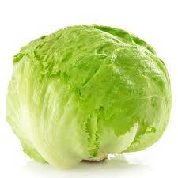
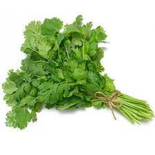

חסה, או חסה תרבותית היא מין צמח חד שנתי רב זנים, הרווח כירק מאכל. בארצות מערביות, עלי החסה נאכלים קרים ולא
מבושלים בסלטים, בהמבורגרים ובמנות אחרות. בסין ובמקומות נוספים במזרח, נהוג לבשל את הירק ולצרוך אותו בשלמותו.
מחיר לקילו 12 ש"ח

גַּד השדה, הידוע בשמו הערבי כוסברה, הוא צמח תבלין ממשפחת הסוככיים. הגד הוא צמח
חד-שנתי, בעל עלים מנוצים ודומה
לפטרוזיליה. הגד משגשג בקרקע קלה, עשירה ומנוקזת היטב. מקור הירק בדרום אירופה ובמזרח התיכון כולל ישראל. כיום,
צמח זה נפוץ כגידול תרבות בעולם כולו. בצמח הגד משתמשים להכנת מאכלים שונים.
מחיר לקילו 10 ש"ח

נַעְנַע הוא סוג צמחים ריחניים ממשפחת השפתניים, המונה 43–44 מינים ו-10 תת-מינים של עשבים חד-שנתיים ורב-שנתיים
ארומטיים הנפוצים כמעט בכל העולם ובמיוחד באזורים הממוזגים-הצפוניים ובאזור הים-תיכון. 3 מינים גדלים בר בישראל,
והבולט ביניהם הוא נענע משובלת. ישנם מינים עם עלים חלקים ואחרים שעליהם מכוסים שערות.
מחיר לקילו 9 ש"ח